font design: White background with black characters with variable contrast. Charaters are black, because they don't contain any color information only shape. characters should be significantly discernible. It was made with Bit Font Maker.
Input
bookmark,
redo,
 undo
undo
All
Effective Emoji's usage
Emoji originally came in the form of Emoticons to form an image with characters rather than a word. Example are: :), :( or more complex ones such as (^-^*). These communicate subtler emotions, which has no other convenient or accesible way to communicate in words. Usally we would use body language for this in natural conversation, but chatting mechanics are more constrained.
How to find: `Ctrl+;` or [https://emojipedia.org/](https://emojipedia.org/) or search in Ubuntu or character app https://www.unicode.org/emoji/charts/full-emoji-list.html## Emoticons
Emoji's popularity and usage depends on the context and conveyed meaning. Some general popularity on twitter can indicate which emoji's are practical.
| Color | Name | Hex |
|---|---|---|
| sky-blue | 4187d8 | |
| smooth-white-red | #e08282 |
Procedural palettes
These palettes are dynamicly defined by color(t) = a + b * cos(2π * (c*t+d))from iq's article.
| pallete | a | b | c | d | steps |
|---|---|---|---|---|---|
| rainbow | 0.5, 0.5, 0.5 | 0.5, 0.5, 0.5 | 1.0, 1.0, 1.0 | 0.00, 0.33, 0.67 | fit |
| cliff waters | 0.5, 0.5, 0.5 | 0.5, 0.5, 0.5 | 1.0, 1.0, 1.0 | 0.00, 0.10, 0.20 | fit |